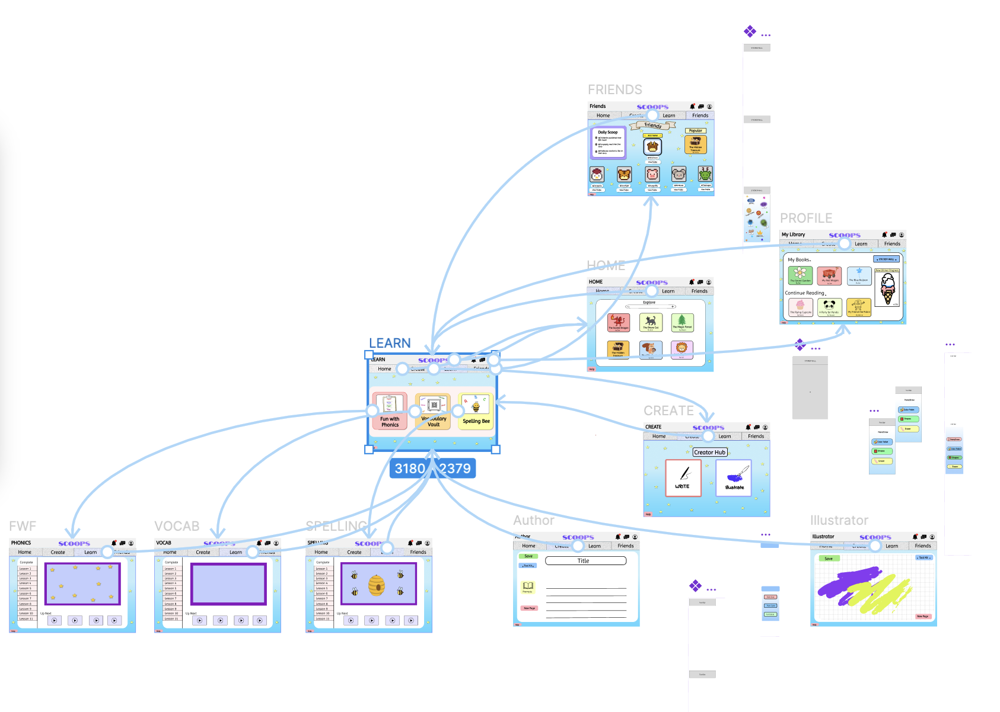
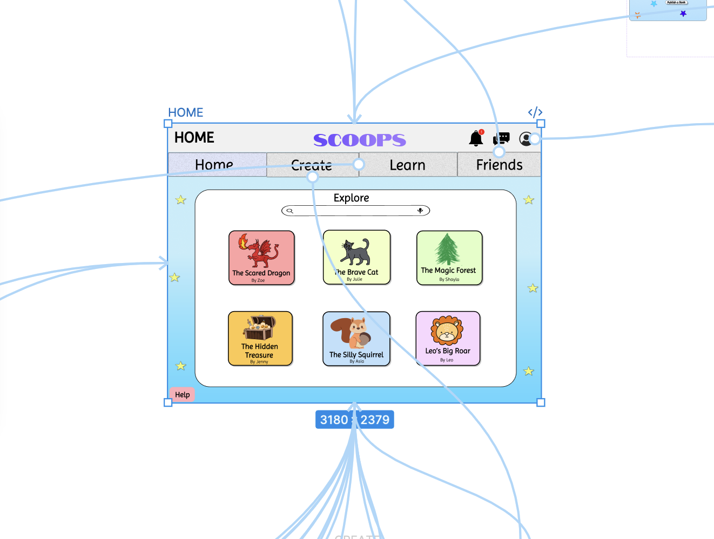
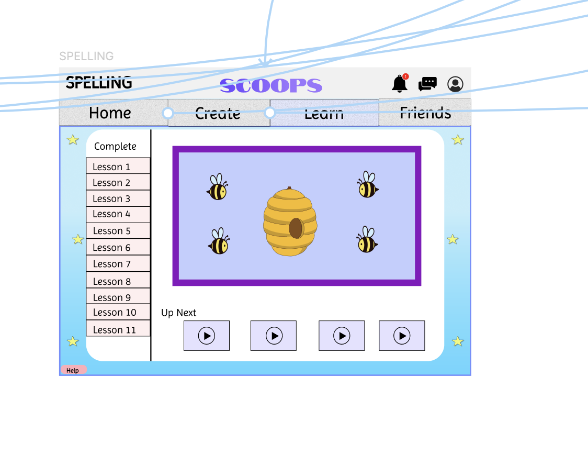
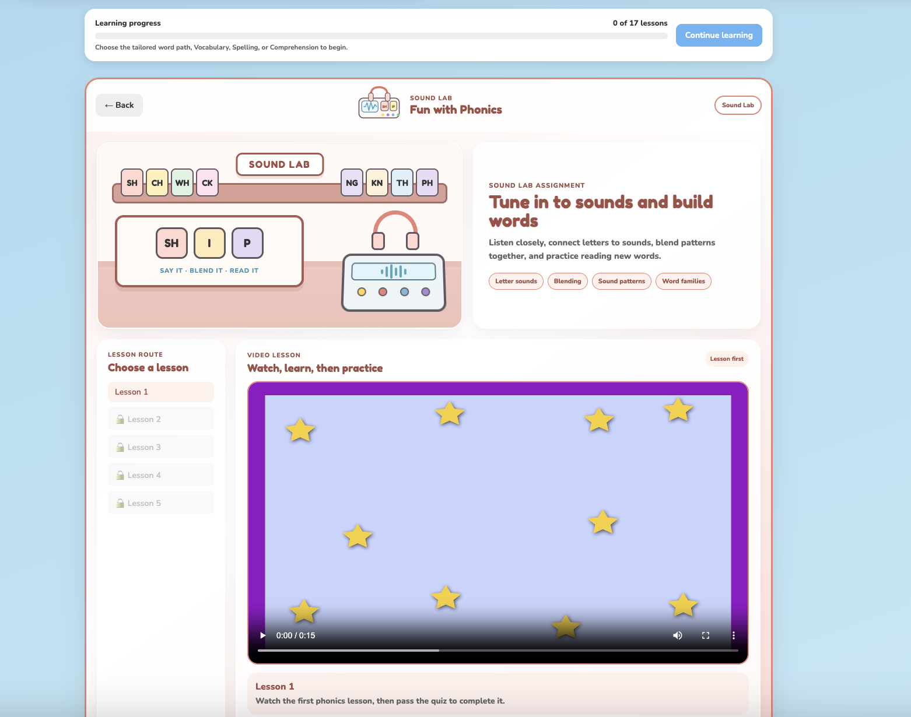
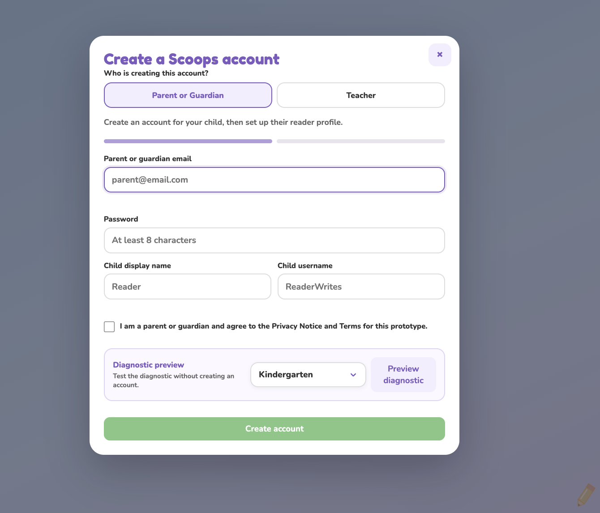
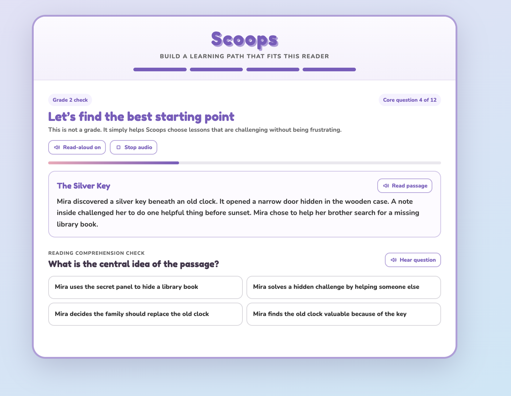
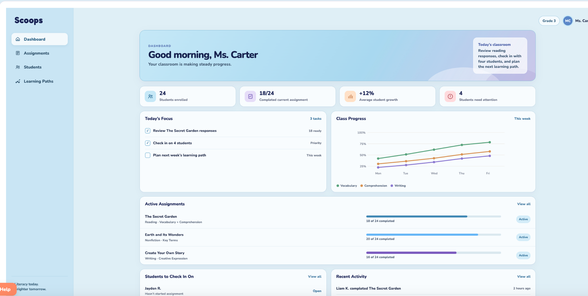
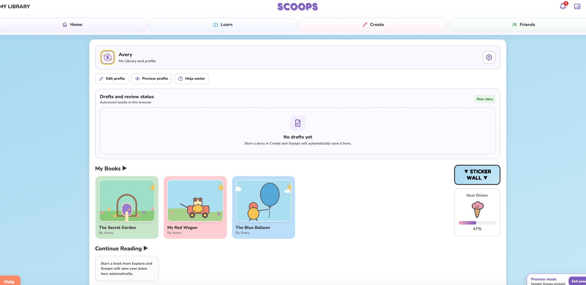

01 · Product Design Case Study
Scoops
A children’s literacy and creative-expression platform that began as my senior capstone and continues to evolve as an ongoing product.
- ROLE
- Product Designer
- CONTEXT
- University capstone + ongoing product
- FOCUS
- UX/UI, interaction, systems
- TOOLS
- Figma, HTML, CSS, JavaScript


The design challenge
Scoops began with a clear goal: create a safe social platform where children could read, learn, create, and connect. My senior capstone gave me the opportunity to develop that idea into a working product. The original version focused primarily on the child experience.
As I continued developing Scoops after graduation, the product expanded beyond the child-facing experience. Parents and teachers needed different information and controls, and the product also needed to preserve a reader’s progress across setup, diagnostics, and learning.
For young readers, I kept the primary actions clear and predictable. Reading, learning, creating, and social features needed to feel connected without making the interface feel instructional or overly complex.
For adults, the focus shifted to setup, progress, and oversight while keeping those tools separate from the child-facing experience.
From map to product
The project began with mapping the core experience in Figma. Once I moved into front-end development, implementation became an important part of the design process.
The early prototype established the main areas of Scoops—Home, Learn, Create, Friends, profile, and lesson paths. Building those screens as a working front end introduced questions that were not fully represented in the prototype: empty library states, progress placement, adult entry points, and the transition from setup into learning.




I included the earlier screens to show how the product evolved. The differences between the prototype and current version reflect decisions that became clearer once the experience had to function as a connected product.
One product, three different users
The original Scoops concept focused primarily on the child experience. As the platform expanded, separate parent/guardian and teacher experiences became necessary.
Each role requires different information. Children need direct access to reading, learning, creating, and social features. Parents or guardians need setup, progress, and activity information. Teachers need a broader view of assignments, classroom progress, learning paths, and students who may need additional support.
Placing all of those tools in one navigation would have added unnecessary complexity to the child experience. I separated the roles while keeping the visual system consistent across the platform.
The decision: separate entry points and tools by role rather than asking every user to move through the same interface.
The goal: keep Scoops visually and structurally consistent while giving each role only the information and controls it needs.



Implementation as part of the design process
Moving from Figma into HTML, CSS, and JavaScript changed how I evaluated the product.
A screen can appear complete in a prototype while still leaving important states undefined. Building Scoops required decisions around drafts, empty libraries, progress states, preview behavior, account roles, and the transition from diagnostics into learning. It also made reusable components more important as the product expanded.
A problem the prototype did not show: in Figma, the diagnostic was a straightforward sequence. In the working product, refreshing could send the reader back to the beginning, which exposed a missing state-management decision.
What changed: the experience needed to account for whether a reader was new, in progress, had completed the diagnostic, or was returning to a learning path.
This was a clear example of development informing design. Although the issue appeared during implementation, the outcome was a UX decision: returning users should be able to continue rather than repeat completed steps.

See where Scoops is now.
The live site reflects the working front-end experience I am continuing to develop. Scoops remains an ongoing product, with the teacher experience, persistence, and real-user validation still in progress.
What I learned
Scoops reinforced that product design continues through implementation.
Building the product made the relationship between visual design, interaction, content, and code much more concrete. As Scoops grew, I shifted from evaluating individual screens to thinking about how new features could fit into a consistent system.
Next, I would continue developing the teacher experience and test the product with children, parents or guardians, and educators. That feedback would help evaluate the navigation, diagnostic, story creation, and progress features in real use.